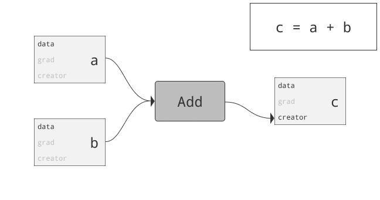
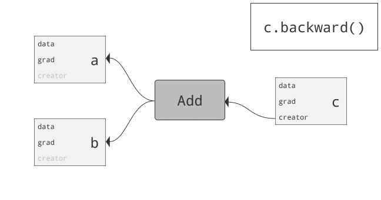
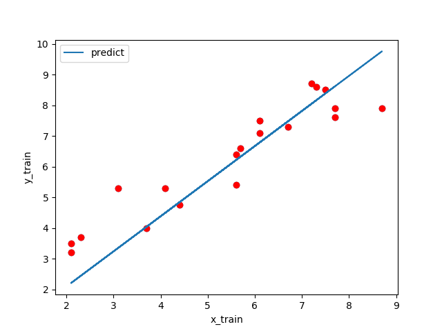
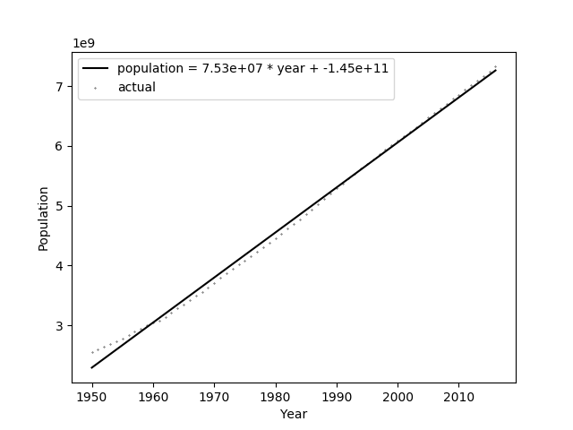
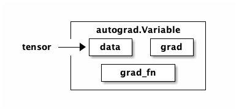

PyTorch
Table of Contents
1. 簡介
PyTorch 為 Facebook 在 2017 年初開源的深度學習框架，其建立在 Torch 之上，且標榜 Python First ，為量身替 Python 語言所打造，使用起來就跟寫一般 Python 專案沒兩樣，也能和其他 Python 套件無痛整合。PyTorch 的優勢在於其概念相當直觀且語法簡潔優雅，因此視為新手入門的一個好選項；再來其輕量架構讓模型得以快速訓練且有效運用資源1。
2. PyTorch 基本架構
2.1. 先確定 pytorch 的版本
1.2 版於 2019-08release
1: pip3 list | grep torch
torch 1.2.0
2.2. 可用 model
- 永遠使用最新發展的套件，效能永遠最好，比賽成績永遠最好 :D，
- 練習：一個主題用三個 model 跑一次，調參數
- TorchVision
- Torchtext
- TorchAudio
- 2018 BIRT
- 2918 XLNET
2.3. torchsummary
1: import torch 2: from torchsummary import summary 3: from torchvision.models import vgg11 # vgg16,19 用GPU跑可能要跑2,3週 4: 5: model = vgg11(pretrained=False) 6: if torch.cuda.is_available(): # 如果可以就使用GPU計算 7: model.cuda() 8: summary(model, (3, 224, 224)) # RGB三色，224*224
----------------------------------------------------------------
Layer (type) Output Shape Param #
================================================================
Conv2d-1 [-1, 64, 224, 224] 1,792
ReLU-2 [-1, 64, 224, 224] 0
MaxPool2d-3 [-1, 64, 112, 112] 0
Conv2d-4 [-1, 128, 112, 112] 73,856
ReLU-5 [-1, 128, 112, 112] 0
MaxPool2d-6 [-1, 128, 56, 56] 0
Conv2d-7 [-1, 256, 56, 56] 295,168
ReLU-8 [-1, 256, 56, 56] 0
Conv2d-9 [-1, 256, 56, 56] 590,080
ReLU-10 [-1, 256, 56, 56] 0
MaxPool2d-11 [-1, 256, 28, 28] 0
Conv2d-12 [-1, 512, 28, 28] 1,180,160
ReLU-13 [-1, 512, 28, 28] 0
Conv2d-14 [-1, 512, 28, 28] 2,359,808
ReLU-15 [-1, 512, 28, 28] 0
MaxPool2d-16 [-1, 512, 14, 14] 0
Conv2d-17 [-1, 512, 14, 14] 2,359,808
ReLU-18 [-1, 512, 14, 14] 0
Conv2d-19 [-1, 512, 14, 14] 2,359,808
ReLU-20 [-1, 512, 14, 14] 0
MaxPool2d-21 [-1, 512, 7, 7] 0
AdaptiveAvgPool2d-22 [-1, 512, 7, 7] 0
Linear-23 [-1, 4096] 102,764,544
ReLU-24 [-1, 4096] 0
Dropout-25 [-1, 4096] 0
Linear-26 [-1, 4096] 16,781,312
ReLU-27 [-1, 4096] 0
Dropout-28 [-1, 4096] 0
Linear-29 [-1, 1000] 4,097,000
================================================================
Total params: 132,863,336
Trainable params: 132,863,336
Non-trainable params: 0
----------------------------------------------------------------
Input size (MB): 0.57
Forward/backward pass size (MB): 125.37
Params size (MB): 506.83
Estimated Total Size (MB): 632.78
----------------------------------------------------------------
2.4. 核心套件
- torch
- torch.Tensor
- Tensor Attributes
- Type Info
- torch.sparse
- torch.cuda
- torch.Storage
- torch.nn (*)
- torch.nn.functional
- torch.nn.init
- torch.optim
- torch.autograd
- torch.distributed
- torch.distributions
- torch.hub
- torch.jit
- torch.multiprocessing
- torch.random
- torch.utils.bottleneck
- torch.utils.checkpoint
- torch.utils.cpp_extension
- torch.utils.data
- torch.utils.dlpack
- torch.utils.model_zoo
- torch.utils.tensorboard
2.5. torch.nn.functional 功能模組
- Convolution functions (*) 卷積函數
- Pooling functions 池化函數
- Non-linear activation functions 激活函數
- Normalization functions
- Linear functions
- Dropout functions
- Sparse functions
- Distance functions
- Loss functions
- Vision functions
- DataParallel functions (multi-GPU, distributed)
2.6. torch.nn.functional.conv1d
- torch.nn.functional.conv1d(input, weight, bias=None, stride=1, padding=0, dilation=1, groups=1) → Tensor
- Parameters
- input – input tensor of shape (minibatch,in_channels,iW)(\text{minibatch} , \text{in\_channels} , iW)(minibatch,in_channels,iW)
- weight – filters of shape (out_channels,in_channelsgroups,kW)(\text{out\_channels} , \frac{\text{in\_channels}}{\text{groups}} , kW)(out_channels,groupsin_channels,kW)
- bias – optional bias of shape (out_channels)(\text{out\_channels})(out_channels) . Default: None
- stride – the stride of the convolving kernel. Can be a single number or a one-element tuple (sW,). Default: 1
- padding – implicit paddings on both sides of the input. Can be a single number or a one-element tuple (padW,). Default: 0
- dilation – the spacing between kernel elements. Can be a single number or a one-element tuple (dW,). Default: 1
- groups – split input into groups, in_channels\text{in\_channels}in_channels should be divisible by the number of groups. Default: 1
- input – input tensor of shape (minibatch,in_channels,iW)(\text{minibatch} , \text{in\_channels} , iW)(minibatch,in_channels,iW)
- Examples:
1: import torch 2: from torch.autograd import Variable 3: from torch import nn 4: import torch.nn.functional as F 5: filters = torch.randn(33, 16, 3) 6: inputs = torch.randn(20, 16, 50) 7: F.conv1d(inputs, filters) 8: print(F)
<module 'torch.nn.functional' from '/usr/local/lib/python3.7/site-packages/torch/nn/functional.py'>
- Parameters
2.7. torch.optim 優化模組
- To use torch.optim you have to construct an optimizer object, that will hold the current state and will update the parameters based on the computed gradients.
- To construct an Optimizer you have to give it an iterable containing the parameters (all should be Variable s) to optimize. Then, you can specify optimizer-specific options such as the learning rate, weight decay, etc.
- 語法
- #1
1: import torch 2: for input, target in dataset: 3: optimizer.zero_grad() 4: output = model(input) 5: loss = loss_fn(output, target) 6: loss.backward() 7: optimizer.step()
- #2
1: import torch 2: for input, target in dataset: 3: def closure(): 4: optimizer.zero_grad() 5: output = model(input) 6: loss = loss_fn(output, target) 7: loss.backward() 8: return loss 9: optimizer.step(closure)
- #1
- source code
github: https://github.com/pytorch/pytorch/blob/master/torch/optim/sgd.py
1: import torch 2: from .optimizer import Optimizer, required 3: 4: class SGD(Optimizer): 5: """Implements stochastic gradient descent (optionally with momentum). 6: 7: Nesterov momentum is based on the formula from 8: `On the importance of initialization and momentum in deep learning`__. 9: 10: Args: 11: params (iterable): iterable of parameters to optimize or dicts defining 12: parameter groups 13: lr (float): learning rate 14: momentum (float, optional): momentum factor (default: 0) 15: weight_decay (float, optional): weight decay (L2 penalty) (default: 0) 16: dampening (float, optional): dampening for momentum (default: 0) 17: nesterov (bool, optional): enables Nesterov momentum (default: False) 18: 19: Example: 20: >>> optimizer = torch.optim.SGD(model.parameters(), lr=0.1, momentum=0.9) 21: >>> optimizer.zero_grad() 22: >>> loss_fn(model(input), target).backward() 23: >>> optimizer.step() 24: 25: __ http://www.cs.toronto.edu/%7Ehinton/absps/momentum.pdf 26: 27: .. note:: 28: The implementation of SGD with Momentum/Nesterov subtly differs from 29: Sutskever et. al. and implementations in some other frameworks. 30: 31: Considering the specific case of Momentum, the update can be written as 32: 33: .. math:: 34: v_{t+1} = \mu * v_{t} + g_{t+1} \\ 35: p_{t+1} = p_{t} - lr * v_{t+1} 36: 37: where p, g, v and :math:`\mu` denote the parameters, gradient, 38: velocity, and momentum respectively. 39: 40: This is in contrast to Sutskever et. al. and 41: other frameworks which employ an update of the form 42: 43: .. math:: 44: v_{t+1} = \mu * v_{t} + lr * g_{t+1} \\ 45: p_{t+1} = p_{t} - v_{t+1} 46: 47: The Nesterov version is analogously modified. 48: """ 49: 50: def __init__(self, params, lr=required, momentum=0, dampening=0, 51: weight_decay=0, nesterov=False): 52: if lr is not required and lr < 0.0: 53: raise ValueError("Invalid learning rate: {}".format(lr)) 54: if momentum < 0.0: 55: raise ValueError("Invalid momentum value: {}".format(momentum)) 56: if weight_decay < 0.0: 57: raise ValueError("Invalid weight_decay value: {}".format(weight_decay)) 58: 59: defaults = dict(lr=lr, momentum=momentum, dampening=dampening, 60: weight_decay=weight_decay, nesterov=nesterov) 61: if nesterov and (momentum <= 0 or dampening != 0): 62: raise ValueError("Nesterov momentum requires a momentum and zero dampening") 63: super(SGD, self).__init__(params, defaults) 64: 65: def __setstate__(self, state): 66: super(SGD, self).__setstate__(state) 67: for group in self.param_groups: 68: group.setdefault('nesterov', False) 69: 70: def step(self, closure=None): 71: """Performs a single optimization step. 72: 73: Arguments: 74: closure (callable, optional): A closure that reevaluates the model 75: and returns the loss. 76: """ 77: loss = None 78: if closure is not None: 79: loss = closure() 80: 81: for group in self.param_groups: 82: weight_decay = group['weight_decay'] 83: momentum = group['momentum'] 84: dampening = group['dampening'] 85: nesterov = group['nesterov'] 86: 87: for p in group['params']: 88: if p.grad is None: 89: continue 90: d_p = p.grad.data 91: if weight_decay != 0: 92: d_p.add_(weight_decay, p.data) 93: if momentum != 0: 94: param_state = self.state[p] 95: if 'momentum_buffer' not in param_state: 96: buf = param_state['momentum_buffer'] = torch.clone(d_p).detach() 97: else: 98: buf = param_state['momentum_buffer'] 99: buf.mul_(momentum).add_(1 - dampening, d_p) 100: if nesterov: 101: d_p = d_p.add(momentum, buf) 102: else: 103: d_p = buf 104: 105: p.data.add_(-group['lr'], d_p) 106: 107: return loss
3. PyTorch 基礎運算
3.1. 創造矩陣
註:2
1: import torch 2: print(torch.ones(2, 3)) # 創造一個填滿1的矩陣 3: 4: torch.zeros(5, 3) # 創造一個填滿0的矩陣 5: 6: print(torch.eye(3)) # 創造一個4x4的單位矩陣 7: 8: print(torch.rand(2, 3) ) # 創造一個元素在[0,1)中隨機分佈的矩陣 9: print(torch.randn(2, 3)) # 創造一個元素從常態分佈(0, 1)隨機取值的矩陣
tensor([[1., 1., 1.],
[1., 1., 1.]])
tensor([[1., 0., 0.],
[0., 1., 0.],
[0., 0., 1.]])
tensor([[0.0469, 0.1002, 0.3170],
[0.6663, 0.0566, 0.3846]])
tensor([[-1.0977, -0.0200, -1.2239],
[-0.4332, -0.6190, 0.7148]])
3.2. 矩陣操作
1: import torch 2: from torch.autograd import Variable 3: from torch.optim import SGD 4: 5: m1 = torch.ones(5, 3) 6: m2 = torch.zeros(5, 3) 7: 8: print(torch.cat((m1, m2), 1) ) # 將m1和m2兩個矩陣在第一個維度合併起來 9: print(torch.stack((m1, m2), 1)) # 將m1和m2兩個矩陣在新的維度（第一維）疊起來 10: 11: print(m1 + m2) # 矩陣element-wise相加，其他基本運算是一樣的 12:
tensor([[1., 1., 1., 0., 0., 0.],
[1., 1., 1., 0., 0., 0.],
[1., 1., 1., 0., 0., 0.],
[1., 1., 1., 0., 0., 0.],
[1., 1., 1., 0., 0., 0.]])
tensor([[[1., 1., 1.],
[0., 0., 0.]],
[[1., 1., 1.],
[0., 0., 0.]],
[[1., 1., 1.],
[0., 0., 0.]],
[[1., 1., 1.],
[0., 0., 0.]],
[[1., 1., 1.],
[0., 0., 0.]]])
tensor([[1., 1., 1.],
[1., 1., 1.],
[1., 1., 1.],
[1., 1., 1.],
[1., 1., 1.]])
3.3. 常用方法3
- torch.rand(*sizes, out=None) → Tensor
返回一個張量，包含了從區間[0, 1)的均勻分佈中抽取的一組隨機數。張量的形狀由參數 sizes 定義。
- torch.randn(*sizes, out=None) → Tensor
返回一個張量，包含了從標準正態分佈（均值爲 0，方差爲 1，即高斯白噪聲）中抽取的一組隨機數。張量的形狀由參數 sizes 定義。
- torch.normal(means, std, out=None) → → Tensor
返回一個張量，包含了從指定均值 means 和標準差 std 的離散正態分佈中抽取的一組隨機數。
標準差 std 是一個張量，包含每個輸出元素相關的正態分佈標準差。
- torch.linspace(start, end, steps=100, out=None) → Tensor
返回一個 1 維張量，包含在區間 start 和 end 上均勻間隔的 step 個點。
輸出張量的長度由 steps 決定。
- torch.sum(input) → float
返回输入向量 input 中所有元素的和。
- 參數
- input (Tensor) - 输入张量
- input (Tensor) - 输入张量
- Example
1: import torch 2: a = torch.randn(1, 3) 3: print(a) 4: print(torch.sum(a)) 5: b = torch.randn(2,6) 6: print(b) 7: print(torch.sum(b))
tensor([[-0.7402, 0.5678, -0.4867]]) tensor(-0.6591) tensor([[-0.4197, -0.9463, -0.0399, 0.3360, 0.7250, 1.7494], [-0.6536, 0.1619, -1.8099, 0.8848, -0.4127, -0.3032]]) tensor(-0.7282)
- 參數
- torch.sum(input, dim, keepdim=False, out=None) → Tensortorch
返回新的张量，其中包括输入张量 input 中指定维度 dim 中每行的和。
若 keepdim 值为 True，则在输出张量中，除了被操作的 dim 维度值降为 1，其它维度与输入张量 input 相同。否则，dim 维度相当于被执行 torch.squeeze()维度压缩操作，导致此维度消失，最终输出张量会比输入张量少一个维度。
- 參數
- input (Tensor) - 输入 Tensor
- dim (int) - 指定维度
- keepdim (bool) - 输出张量是否保持与输入张量有相同数量的维度
- out (Tensor,optional) - 结果张量
- input (Tensor) - 输入 Tensor
- Example
1: import torch 2: a = torch.rand(4, 4) 3: print(a) 4: print(torch.sum(a, 1, True)) 5: print(torch.sum(a, 1, False)) 6: print(torch.sum(a, 0, True)) 7: print(torch.sum(a, 1, False))
tensor([[0.4779, 0.2066, 0.1321, 0.0134], [0.4947, 0.9133, 0.4378, 0.3185], [0.0167, 0.6487, 0.8574, 0.4689], [0.6329, 0.9853, 0.6804, 0.4612]]) tensor([[0.8300], [2.1643], [1.9917], [2.7598]]) tensor([0.8300, 2.1643, 1.9917, 2.7598]) tensor([[1.6222, 2.7539, 2.1078, 1.2620]]) tensor([0.8300, 2.1643, 1.9917, 2.7598])
- 參數
- torch.prod(input) → float
返回输入张量 input 所有元素的乘积。
- 參數:
- input (Tensor) - 输入 Tensor
- input (Tensor) - 输入 Tensor
- Example
1: import torch 2: a = torch.randn(1, 3) 3: print(a) 4: print(torch.prod(a)) 5: b = torch.randn(2,3) 6: print(b) 7: print(torch.prod(b))
tensor([[ 0.5791, -0.8357, -0.7155]]) tensor(0.3463) tensor([[ 1.2112, -0.6698, 1.2576], [ 0.3263, -1.0300, -0.8296]]) tensor(-0.2845)
- 參數:
- torch.prod(input, dim, keepdim=False, out=None) → Tensor
返回新的张量，其中包括输入张量 input 中指定维度 dim 中每行的乘积。
若 keepdim 值为 True，则在输出张量中，除了被操作的 dim 维度值降为 1，其它维度与输入张量 input 相同。否则，dim 维度相当于被执行 torch.squeeze()维度压缩操作，导致此维度消失，最终输出张量会比输入张量少一个维度。
- 參數:
- input (Tensor) - 输入
- Tensordim (int) - 指定维度
- keepdim (bool) - 输出张量是否保持与输入张量有相同数量的维度
- out (Tensor,optional) - 结果张量
- input (Tensor) - 输入
- Example
1: import torch 2: a = torch.randn(2,4) 3: print(a) 4: print(torch.prod(a,1,True)) 5: print(torch.prod(a,1,False)) 6: print(torch.prod(a,0,True))
tensor([[-0.0529, 1.9590, -0.8325, -1.5983], [-2.0691, -1.6575, -1.0308, 0.4937]]) tensor([[-0.1378], [-1.7454]]) tensor([-0.1378, -1.7454]) tensor([[ 0.1094, -3.2470, 0.8581, -0.7891]])
- 參數:
- torch.Tensor.indexadd(dim, index, tensor) → Tensor
按索引参数 index 中所确定的顺序，将参数张量 tensor 中的元素与执行本方法的张量的元素逐个相加。参数 tensor 的尺寸必须严格地与执行方法的张量匹配，否则会发生错误。
- 參數
- dim (int) - 索引 index 所指向的维度
- index (LongTensor) - 包含索引数的张量
- tensor (Tensor) - 含有相加元素的张量
- dim (int) - 索引 index 所指向的维度
- Example
1: import torch 2: x = torch.Tensor([[1, 1, 1], [1, 1, 1], [1, 1, 1]]) 3: print(x) 4: t = torch.Tensor([[1, 2, 3], [4, 5, 6], [7, 8, 9]]) 5: index = torch.LongTensor([0, 2, 1]) 6: print(x.index_add_(0, index, t))
tensor([[1., 1., 1.], [1., 1., 1.], [1., 1., 1.]]) tensor([[ 2., 3., 4.], [ 8., 9., 10.], [ 5., 6., 7.]])
- 參數
- torch.mean(input)
返回输入张量 input 中每个元素的平均值。
- 參數
input (Tensor) – 输入张量
- Example
1: import torch 2: a = torch.randn(1, 3) 3: print(a) 4: print(torch.mean(a)) 5: b = torch.randn(3,5) 6: print(b) 7: print(torch.mean(b))
tensor([[ 0.3628, -0.4053, -1.5295]]) tensor(-0.5240) tensor([[ 0.5471, -1.1326, -1.1903, 0.2861, -0.3787], [ 1.9305, 0.6218, 0.0304, 0.6502, 0.3808], [-0.1583, -0.5865, 0.9115, 1.3594, -1.1852]]) tensor(0.1391)
- 參數
- torch.mean(input, dim, keepdim=False, out=None)
返回新的张量，其中包含输入张量 input 指定维度 dim 中每行的平均值。
若 keepdim 值为 True，则在输出张量中，除了被操作的 dim 维度值降为 1，其它维度与输入张量 input 相同。否则，dim 维度相当于被执行 torch.squeeze()维度压缩操作，导致此维度消失，最终输出张量会比输入张量少一个维度。
- 參數
- input (Tensor) - 输入张量
- dim (int) - 指定进行均值计算的维度
- keepdim (bool, optional) - 输出张量是否保持与输入张量有相同数量的维度
- out (Tensor) - 结果张量
- input (Tensor) - 输入张量
- Example
1: import torch 2: a = torch.randn(3,4) 3: print(a) 4: print(torch.mean(a, 1, True)) 5: print(torch.mean(a, 1, False)) 6: print(torch.mean(a, 0, True))
tensor([[-0.6692, -0.8781, -1.1615, -0.4666], [ 1.6185, -1.4797, 0.3792, 0.6478], [ 2.5029, 0.5638, -0.3332, 0.6206]]) tensor([[-0.7939], [ 0.2914], [ 0.8385]]) tensor([-0.7939, 0.2914, 0.8385]) tensor([[ 1.1507, -0.5980, -0.3718, 0.2673]])
- 參數
- orch.var(input, unbiased=True) → float
返回输入向量 input 中所有元素的方差。
- torch.var(input, dim, keepdim=False, unbiased=True, out=None) → Tensor
返回新的张量，其中包括输入张量 input 中指定维度 dim 中每行的方差。
若 keepdim 值为 True，则在输出张量中，除了被操作的 dim 维度值降为 1，其它维度与输入张量 input 相同。否则，dim 维度相当于被执行 torch.squeeze()维度压缩操作，导致此维度消失，最终输出张量会比输入张量少一个维度。
- 參數
- input (Tensor) - 输入 Tensor
- dim (int) - 指定维度
- keepdim (bool) - 输出张量是否保持与输入张量有相同数量的维度
- unbiased (bool) - 是否使用基于修正贝塞尔函数的无偏估计
= out (Tensor,optional) - 结果张量
- input (Tensor) - 输入 Tensor
- Example
1: import torch 2: a = torch.randn(4, 4) 3: print(a) 4: print(torch.var(a, 1, True)) 5: print(torch.var(a, 1, False)) 6: print(torch.var(a, 0, True)) 7: print(torch.var(a, 0, False))
tensor([[ 0.1367, -0.7436, -1.1812, -1.2855], [-0.1468, -1.8947, -0.3956, 2.1252], [-1.4925, -0.2174, -0.5797, -1.0848], [-0.0302, -0.5172, -1.6083, 1.1392]]) tensor([0.4192, 2.7533, 0.3137, 1.2982]) tensor([0.3144, 2.0650, 0.2352, 0.9736]) tensor([0.5604, 0.5378, 0.3104, 2.8145]) tensor([0.4203, 0.4033, 0.2328, 2.1109])
- 參數
- torch.max(input) → float
返回输入张量所有元素的最大值。
- torch.max(input, dim, keepdim=False, out=None) -> (Tensor, LongTensor)
返回新的张量，其中包括输入张量 input 中指定维度 dim 中每行的最大值，同时返回每个最大值的位置索引。
若 keepdim 值为 True，则在输出张量中，除了被操作的 dim 维度值降为 1，其它维度与输入张量 input 相同。否则，dim 维度相当于被执行 torch.squeeze()维度压缩操作，导致此维度消失，最终输出张量会比输入张量少一个维度。
- 參數
- input (Tensor) - 输入 Tensor
- dim (int) - 指定维度
- keepdim (bool) - 输出张量是否保持与输入张量有相同数量的维度
= out (Tensor,optional) - 结果张量
- input (Tensor) - 输入 Tensor
- Example
1: import torch 2: a = torch.randn(3, 3) 3: print(a) 4: print(torch.max(a, 1, True)) 5: print(torch.max(a, 0, True))
tensor([[-0.4094, -0.6951, -0.1855], [-1.2454, 0.8155, -0.3386], [ 0.0014, 0.0167, -0.5409]]) torch.return_types.max( values=tensor([[-0.1855], [ 0.8155], [ 0.0167]]), indices=tensor([[2], [1], [1]])) torch.return_types.max( values=tensor([[ 0.0014, 0.8155, -0.1855]]), indices=tensor([[2, 1, 0]]))
- 參數
- torch.max(input, other, out=None) → Tensor
逐个元素比较张量 input 与张量 other，将比较出的最大值保存到输出张量中。
两个张量尺寸不需要完全相同，但需要支持自动扩展法则。
- 參數
- input (Tensor) - 输入 Tensor
- other (Tensor) - 另一个输入的 Tensor
- out (Tensor,optional) - 结果张量
- input (Tensor) - 输入 Tensor
- Example
1: import torch 2: a = torch.randn(4) 3: print(a) 4: b = torch.randn(1) 5: print(b) 6: print(torch.max(a, b))
tensor([-0.8179, 0.5469, 2.1019, -0.3898]) tensor([1.5829]) tensor([1.5829, 1.5829, 2.1019, 1.5829])
- 參數
- torch.min(input) → float
返回输入张量所有元素的最小值。torch
- torch.min(input, dim, keepdim=False, out=None) -> (Tensor, LongTensor)
返回新的张量，其中包括输入张量 input 中指定维度 dim 中每行的最小值，同时返回每个最小值的位置索引。
若 keepdim 值为 True，则在输出张量中，除了被操作的 dim 维度值降为 1，其它维度与输入张量 input 相同。否则，dim 维度相当于被执行 torch.squeeze()维度压缩操作，导致此维度消失，最终输出张量会比输入张量少一个维度。
- 參數
- input (Tensor) - 输入 Tensor
- dim (int) - 指定维度
- keepdim (bool) - 输出张量是否保持与输入张量有相同数量的维度
= out (Tensor,optional) - 结果张量
- input (Tensor) - 输入 Tensor
- Example
1: import torch 2: import torch 3: a = torch.randn(3, 3) 4: print(a) 5: print(torch.min(a, 1, True)) 6: print(torch.min(a, 0, True))
tensor([[ 0.4263, -0.1528, -0.6943], [-0.5110, -0.4034, -1.8242], [ 0.0458, 1.1824, 1.5221]]) torch.return_types.min( values=tensor([[-0.6943], [-1.8242], [ 0.0458]]), indices=tensor([[2], [2], [0]])) torch.return_types.min( values=tensor([[-0.5110, -0.4034, -1.8242]]), indices=tensor([[1, 1, 1]]))
- 參數
- torch.min(input, other, out=None) → Tensor
逐个元素比较张量 input 与张量 other，将比较出的最小值保存到输出张量中。
两个张量尺寸不需要完全相同，但需要支持自动扩展法则。
- 參數
- input (Tensor) - 输入 Tensor
- other (Tensor) - 另一个输入的 Tensor
- out (Tensor,optional) - 结果张量
- input (Tensor) - 输入 Tensor
- Example
1: import torch 2: a = torch.randn(4) 3: print(a) 4: b = torch.randn(1) 5: print(b) 6: print(torch.min(a, b))
tensor([0.8462, 0.6718, 0.2461, 0.2186]) tensor([1.2698]) tensor([0.8462, 0.6718, 0.2461, 0.2186])
- 參數
- torch.rsqrt(input) → Tensor
返回新的张量，其中包含 input 张量每个元素平方根的倒数。
- torch.lerp(star,end,weight) → Tensor
基于 weight 对输入的两个张量 start 与 end 逐个元素计算线性插值，结果返回至输出张量。
返回结果是： \( outs_i = start_i + weight * (end_i - start_i) \)
- torch.tanh(input, out=None) → Tensor
返回新的张量，其中包括输入张量 input 中每个元素的双曲正切。
- torch.equal(tensor1, tensor2) → bool
如果两个张量的尺寸和元素都相同，则返回 True，否则返回 False。
- torch.gt(input, other, out=None) → Tensor
计算 input tensor > other
逐个元素比较输入张量 input 是否大于另外的张量或浮点数 other。若大于则返回为 True，否则返回 False。
若张量 other 无法自动扩展成与输入张量 input 相同尺寸，则返回为 False。
- 參數
- input (Tensor) - 要比较的张量
- other (Tensor or float) - 要比较的张量或浮点数
- out (Tensor, optional) - 输出张量，必须是 ByteTensor 或与输入张量相同。
- input (Tensor) - 要比较的张量
- Example
1: import torch 2: 3: a = torch.Tensor([[1, 2], [3, 4]]) 4: b = torch.Tensor([[1, 1], [4, 4]]) 5: 6: print(torch.gt(a, b)) 7: print(torch.gt(torch.Tensor([[1, 2], [3, 4]]), torch.Tensor([[1, 1], [4, 4]])))
tensor([[False, True], [False, False]]) tensor([[False, True], [False, False]])
- 參數
- torch.ge(input, other, out=None) → Tensor
计算 input tensor >= other
逐个元素比较输入张量 input 是否大于或等于另外的张量或浮点数 other。若大于或等于则返回为 True，否则返回 False。
若张量 other 无法自动扩展成与输入张量 input 相同尺寸，则返回为 False。
3.4. Variable（變數）以及模型自動更新器
我們常常聽到人說「train 一個 model」，一個模型（model）代表著一系列的運算，將一個代表輸入（可能是文字、音訊、影像等任何你想的到的資料）的矩陣變成結果（可能是文字翻譯、影像辨識結果）的過程。而訓練（training）即是更新模型參數的過程。
所以究竟該怎麼訓練一個模型？首先，我們必須先了解誤差（loss）是什麼。誤差代表我們的模型預測出來的結果和真實情況的差距，通常是一個純量（scalar）。得到誤差後，我們通常使用梯度下降法（gradient descent），藉由反向傳播（backpropagation）來更新我們的模型。如果你不知道什麼是梯度下降和反向傳播，你可以想像是一個更新參數的方式，在更新的過程中，誤差將會從結果往資料流向相反的方向傳遞。我們並不是一次就能夠更新到最後的結果；相反的，我們每次只走了一小步（還不一定每次都是正確的方向）。不過我們希望，這些更新的累積能減少誤差，使我們的預測越來越接近真實結果。
- Variable
Variable 為 PyTorch 裡建立模型的最小元件。深度學習的模型常常用一層一層的 layer 來作為變數操作的單位。Layer 又是五花八門，常用的有 Full-connected layer，Convolutional layer、Recurrent layer 等等。每一種 layer 通常包含不只一個 Variable 的操作。Pytorch 的模組可以把這些操作群組在一起。模組甚至可以包含其他模組，組成一個樹狀結構。如此一來，變數的建立與管理變得十分方便。事實上，我們通常把整個模型包裝成一個模組，這麼做尤其在儲存和載入模型的時候非常有用。
一個 Variable 最重要的屬性（attribute）是 data，它是一個 Tensor 物件，儲存這個變數現在的值。一個 Variable 創建與使用方式長這個樣子：
1: import torch 2: from torch.autograd import Variable 3: 4: m1 = torch.ones(2, 3) 5: m2 = torch.ones(2, 3) 6: a = Variable(m1) 7: b = Variable(m2) 8: c = a + b 9: 10: print(c)
tensor([[2., 2., 2.], [2., 2., 2.]])

PyTorch 的優勢之一為：幾乎所有對 Tensor 的操作都可以用在 Variable 上！所以我們使用者只需要熟悉一種語法。而，搭配前面對於有向圖的說明，大家必須了解到其背後所做的事情是不一樣的！Tensor 的操作是單純的資料修改，沒有紀錄；而 Variable 的操作除了 data 的資料會有改動，所有的操作也會記錄下來變成一個有向圖，藉由 creator 這個屬性儲存起來。
Variable 還有兩個重要的屬性。
- requires_grad
指定要不要更新這個變數，對於不需要更新的變數可以把他設定成 False，可以加快運算。
- volatile
指定需不需要保留紀錄用的變數。指定變數為 True 代表運算不需要記錄，可以加快運算。如果一個變數的 volatil 是 True，則它的 requires_grad 一定是 False。
- requires_grad
- Parameter
參數（Parameter）是變數（Variable）的子物件。意思是說，它們能做到的事情幾乎一模一樣。唯一的不同點是，因為 Module 會維護自己用到參數的集合，當我們將 Parameter 物件指定給模組的屬性時，它就會被記錄在這個集合裡，而且還會有一個唯一對應的名稱；Variable 不會有這種效果。
模組的套疊在這個邏輯也能正確的運作。例如說，子模組的參數也會自動變成父模組的參數。在下面的範例中，nn.Conv2d 是個內建的模組，包含兩個參數 weight 和 bias，正確的變成我們自訂模組的參數。
1: import torch.nn as nn 2: import torch.nn.functional as F 3: 4: class Model(nn.Module): 5: def __init__(self): 6: super().__init__() 7: self.conv1 = nn.Conv2d(1, 20, 5) # 註冊了conv1這個名字 8: self.conv2 = nn.Conv2d(20, 20, 5) # 註冊了conv2這個名字 9: 10: def forward(self, x): 11: x = F.relu(self.conv1(x)) 12: return F.relu(self.conv2(x)) 13: 14: print(Model().parameters()) # 會印出4個參數'conv1.weight', 'conv1.bias', 15: # 'conv2.weight', 'conv2.bias'的值
<generator object Module.parameters at 0x1239cabd0>
簡單來說，參數才是我們使用 Module 時候會面對到的物件，但一般來說這些差異都已經被包裝起來了，就如同上面的範例一樣。
- Module
那怎麼使用模組呢？一般來說，我們只需要定義模組創建的時候用到的參數，以及模組從輸入到輸出做了怎樣的操作。前者被定義在__init__函數裡，後者被定義在 forward 函數裡。讓我們再看一次上面的範例：
1: import torch.nn as nn 2: import torch.nn.functional as F 3: 4: class Model(nn.Module): 5: def __init__(self): 6: """ 7: 在__init__函數裡定義這個模組會用到的參數 8: """ 9: super().__init__() 10: self.conv1 = nn.Conv2d(1, 20, 5) 11: self.conv2 = nn.Conv2d(20, 20, 5) 12: 13: def forward(self, x): 14: """ 15: 在forward函數裡定義輸入和輸出值的關係 16: """ 17: x = F.relu(self.conv1(x)) 18: return F.relu(self.conv2(x)) 19: 20: # 假設 _input是一個變數 21: model = Model() 22: y = model(_input) # y就是我們模組的輸出 23:
PyTorch 使用 Python class 來代表管理一群參數的單位，我們能夠用物件的屬性直接存取內部用到的參數，這樣的架構是非常直覺並符合語義（semantics）的。
幾個 Module 非常重要的功能：
- 將資料搬到 CPU/GPU
之前提過 PyTorch 支援 GPU 運算。Module 可以讓我們一次把所有包含的變數一次搬到 CPU/GPU。注意到兩個 Tensor 的運算只能在同一個 CPU/GPU 上執行，所以將所有變數一次搬移是個很重要的功能。呼叫 cpu()和 cuda()可以執行這個功能。另外，我們可以用 torch.cuda.is_available()來檢查我們可不可以使用 CUDA 來運算。
1: model = Model() 2: if torch.cuda.is_available(): 3: model.cuda()
- 訓練/運算模式
有很多模組在訓練的時候和預測的時候用到同樣的參數，但是執行的運算不一樣，例如 Dropout、Batch Normalization 等。因此在訓練和運算的時候，記得分別呼叫 train()和 eval()來切換模式。
一般來說，我們會分別用不同的函式來包裝訓練和預測的功能。所以一個典型的程式會長的像下面這個樣子。
1: def update(model, loader): 2: model.train() 3: # ... 4: 5: def evaluate(model, loader): 6: model.eval() 7: # ...
- 儲存/載入模型
當我們訓練完一個模型，最重要的當然是把它儲存起來在日後使用。當我們呼叫 state_dict()，會拿到一個參數名稱對應到值的字典，然後我們可以呼叫 PyTorch 的內建函式把它儲存起來。
1: torch.save(model.state_dict(), PATH)而日後要拿回來的時候，可以呼叫 load_state_dict 把值載入到對應的參數名稱。
1: model.load_state_dict(torch.load(PATH)) - 將資料搬到 CPU/GPU
- Autograd
如同上面所說的，反向傳播是我們現在廣泛使用的更新模型方式。當我們定義了誤差如何計算的同時，其實也隱含定義了反向傳播的傳遞方向。這正是 Autograd 的運作原理：藉由前面所說的有向圖，PyTorch 可以自動幫我們計算梯度。我們只要對於誤差的 Variable 物件呼叫 backward 函數，就可以把沿途所用到參數的 gradient 都計算出來，儲存在各個參數的 grad 屬性裡。最後，更新每個參數的 data 值。通常，我們使用優化器（optimizer）來更新它們。
優化器的使用方法也非常簡單。首先在初始化優化器時提供被更新參數的清單。在每一次更新前，先呼叫優化器的 zero_grad 把上一次更新時用到的梯度歸零（這一步很容易忘記。如果沒有做，backward 得到的梯度會被累加）。接著，呼叫 backward 將參數的 grad 算出來後，再呼叫 step 利用儲存的 grad 和 data 來計算新的 data 的值。
就讓我們延續上面的範例來解釋使用原理。
1: import torch 2: from torch.autograd import Variable 3: from torch.optim import SGD 4: 5: m1 = torch.ones(5, 3) 6: m2 = torch.ones(5, 3) 7: 8: # 記得要將requires_grad設成True 9: a = Variable(m1, requires_grad=True) 10: b = Variable(m2, requires_grad=True) 11: 12: # 初始化優化器，使用SGD這個更新方式來更新a和b 13: optimizer = SGD([a, b], lr=0.1) 14: 15: for _ in range(10): # 我們示範更新10次 16: loss = (a + b).sum() # 假設a + b就是我們的loss 17: print(loss) 18: optimizer.zero_grad() 19: loss.backward() 20: optimizer.step() # 更新 21:
tensor(30., grad_fn=<SumBackward0>) tensor(27.0000, grad_fn=<SumBackward0>) tensor(24.0000, grad_fn=<SumBackward0>) tensor(21.0000, grad_fn=<SumBackward0>) tensor(18.0000, grad_fn=<SumBackward0>) tensor(15.0000, grad_fn=<SumBackward0>) tensor(12.0000, grad_fn=<SumBackward0>) tensor(9.0000, grad_fn=<SumBackward0>) tensor(6.0000, grad_fn=<SumBackward0>) tensor(3.0000, grad_fn=<SumBackward0>)
Backword 基本更新步驟：
- 操作現有的參數與輸入的變數，得到預測。利用預測和正確答案定義我們的誤差。
- 呼叫優化器的 zero_grad 將上次更新的梯度歸零。
- 呼叫誤差的 backward 算出所有參數的梯度。
- 呼叫優化器的 step 更新參數。
- 操作現有的參數與輸入的變數，得到預測。利用預測和正確答案定義我們的誤差。
3.5. PyTorch 的優勢
- 與 Python、NumPy 的操作十分類似
PyTorch 中 Tensor 的使用方式就和 NumPy 差不多，與 NumPy 之間的轉換也是非常容易。不過就算沒有用過 NumPy，也許你也能夠看出來 Tensor 的操作就和使用一個普通的 Python 變數沒有什麼差異。由於這些操作的方法有統一的規則，就算臨時忘記要用的功能，查閱說明文件很快就能夠找到。
- 動態建立模型
上述利用 autograd 更新的過程揭露了 PyTorch 和 TensorFlow、Theano 等其他深度學習框架最不一樣的差異：PyTorch 會動態的在每一次更新/計算結果的過程建立有向圖，每一行對 Variable 的操作都是建立模型的過程；其他框架會先編譯整個模型再開始更新/計算。也許有人會懷疑，每一次都要重新建立模型是否會讓運算速度變慢，但就我們的使用經驗是感覺不出來的。此一動態建立有向圖的過程有兩個好處：
- 當我們的模型有錯誤的時候，PyTorch 會被迫中止在發生錯誤的地方，並立即回報錯誤原因。其他框架如 Keras，因為需要靜態建立模型並呼叫 compile，會在執行編譯時才回報錯誤的原因。要從錯誤的原因回推造成錯誤的程式碼不一定非常容易，這方面的差異大大的影響我們除錯的速度。
- 動態的建立模型代表我們能夠根據每一次的輸入來建立對應的模型，這點對於某些特殊的 RNN 模型特別有用，在 TensorFlow 這樣靜態建立模型的框架中是很難實踐的。
- 當我們的模型有錯誤的時候，PyTorch 會被迫中止在發生錯誤的地方，並立即回報錯誤原因。其他框架如 Keras，因為需要靜態建立模型並呼叫 compile，會在執行編譯時才回報錯誤的原因。要從錯誤的原因回推造成錯誤的程式碼不一定非常容易，這方面的差異大大的影響我們除錯的速度。
- PyTorch 與靜態建立模型的框架（TensorFlow）比較
如果你有使用過 TensorFlow，這個段落的描述應該十分熟悉。對於 Tensorflow，如果要根據輸入來判斷執行不同的運算，唯一的做法是針對每一種可能的操作都預先建立模型，再利用一個判斷的物件 tf.cond 來執行不同的操作，如下面的範例（改寫自一篇 StackOverflow 的回答）
1: x = tf.placeholder(tf.float32, shape=[None, 20], name="x_input") 2: condition = tf.placeholder(tf.int32, shape=[], name="condition") 3: W = tf.Variable(tf.zeros([20, 10]), name="weights") 4: b = tf.Variable(tf.zeros([10]), name="bias") 5: 6: y = tf.cond(condition > 0, 7: lambda: tf.matmul(x, W) + b, 8: lambda: tf.matmul(x, W) - b) 9:
注意最後三行，對於 condition > 0 的兩種操作都會在靜態建立模型時被執行到，而且必須被包裝成函式的型態（這裡使用 lambda 來建立匿名函式）。同樣的情況也出現在需要用到迴圈的模型。筆者認為這樣子的架構下寫出來的程式是十分迂迴，不符合直覺的。以下是 PyTorch 版本，因為是動態建立模型，直接使用一般的 Python 運算式。
1: x = Variable(torch.randn(32, 20), requires_grad=True) 2: W = Variable(torch.zeros(20, 10), requires_grad=True) 3: b = Variable(torch.zeros(10), requires_grad=True) 4: 5: y = x.mm(W) 6: 7: if condition > 0: 8: y = y + b.expand_as(y) 9: else: 10: y = y - b.expand_as(y) 11:
4. PyTorch 簡單案例：線性迴歸
4.1. Example #1: 線性迴歸
1: import sys 2: import torch 3: import torch.nn as nn 4: import numpy as np 5: import matplotlib.pyplot as plt 6: from torch.autograd import Variable 7: from torchsummary import summary 8: 9: # Hyper Parameters 10: input_size = 1 11: output_size = 1 12: num_epochs = 1000 13: learning_rate = 0.001 14: 15: # xtrain產生矩陣資料 16: x_train = np.array([[2.3], [4.4], [3.7], [6.1], [7.3], [2.1],[5.6], [7.7], [8.7], [4.1], 17: [6.7], [6.1], [7.5], [2.1], [7.2], 18: [5.6], [5.7], [7.7], [3.1]], dtype=np.float32) 19: 20: y_train = np.array([[3.7], [4.76], [4.], [7.1], [8.6], [3.5],[5.4], [7.6], [7.9], [5.3], 21: [7.3], [7.5], [8.5], [3.2], [8.7], 22: [6.4], [6.6], [7.9], [5.3]], dtype=np.float32) 23: 24: # Linear Regression Model 25: class LinearRegression(nn.Module): 26: #__init__定義 model 中需要的參數，weight、bias 等等 27: def __init__(self, input_size, output_size): 28: super(LinearRegression, self).__init__() 29: self.linear = nn.Linear(input_size, output_size) 30: # 定義 model 接收 input 時，data 要怎麼傳遞、經過哪些 activation function 等等 31: def forward(self, x): 32: out = self.linear(x) 33: return out 34: 35: model = LinearRegression(input_size, output_size) 36: 37: # Loss and Optimizer 38: criterion = nn.MSELoss() 39: optimizer = torch.optim.SGD(model.parameters(), lr=learning_rate) 40: # Train the Model 41: for epoch in range(num_epochs): 42: # 將x從numpy的格式轉為torch的變數格式 43: inputs = Variable(torch.from_numpy(x_train)) 44: targets = Variable(torch.from_numpy(y_train)) 45: 46: # Forward + Backward + Optimize 47: optimizer.zero_grad() 48: outputs = model(inputs) 49: loss = criterion(outputs, targets) 50: loss.backward() 51: optimizer.step() 52: 53: if (epoch+1) % 100 == 0: 54: # print ('Epoch [%d/%d], Loss: %.4f' %(epoch+1, num_epochs, loss.data[0])) 55: print ('Epoch [%d/%d], Loss: %.4f' %(epoch+1, num_epochs, loss.data)) 56: # Plot the graph 57: model.eval() 58: predicted = model(Variable(torch.from_numpy(x_train))).data.numpy() 59: 60: plt.figure() 61: plt.scatter(x_train,y_train) 62: plt.xlabel('x_train') 63: #x軸名稱 64: plt.ylabel('y_train') 65: 66: plt.plot(x_train, y_train, 'ro') 67: plt.plot(x_train, predicted, label='predict') 68: plt.legend() 69: #plt.show() #for Google coLab environment 70: plt.plot() 71: plt.savefig("linearReg.png") 72: # 呈現model的layers狀況 73: summary(model, (19, 1, 1))
Epoch [100/1000], Loss: 0.5649
Epoch [200/1000], Loss: 0.5559
Epoch [300/1000], Loss: 0.5474
Epoch [400/1000], Loss: 0.5393
Epoch [500/1000], Loss: 0.5316
Epoch [600/1000], Loss: 0.5243
Epoch [700/1000], Loss: 0.5172
Epoch [800/1000], Loss: 0.5105
Epoch [900/1000], Loss: 0.5042
Epoch [1000/1000], Loss: 0.4981
----------------------------------------------------------------
Layer (type) Output Shape Param #
================================================================
Linear-1 [-1, 19, 1, 1] 2
================================================================
Total params: 2
Trainable params: 2
Non-trainable params: 0
----------------------------------------------------------------
Input size (MB): 0.00
Forward/backward pass size (MB): 0.00
Params size (MB): 0.00
Estimated Total Size (MB): 0.00
----------------------------------------------------------------

Figure 1: 線性迴歸分佈圖
4.2. Example #2: 世界人口數預測
1: import pandas as pd 2: import matplotlib.pyplot as plt 3: 4: import torch 5: import torch.nn 6: import torch.optim 7: 8: # 下載人數 9: try: 10: url = r'http://en.wikipedia.org/wiki/World_population_estimates' 11: df = pd.read_html(url, header=0, attrs={"class" : "wikitable"})[2] 12: except: 13: url = 'https://raw.githubusercontent.com/MyDearGreatTeacher/AI201909/master/data/population.csv' 14: df = pd.read_csv(url, index_col=0) 15: df 16: 17: 18: years = torch.tensor(df.iloc[:, 0], dtype=torch.float32) 19: populations = torch.tensor(df.iloc[:, 1], dtype=torch.float32) 20: 21: # 線性回歸 22: x = torch.stack([years, torch.ones_like(years)], 1) 23: y = populations 24: wr, _ = torch.lstsq(y, x) # 最小平方和 25: slope, intercept = wr[:2, 0] # 求斜率、截距 26: result = 'population = {:.2e} * year + {:.2e}'.format(slope, intercept) 27: print('回歸結果：' + result) 28: 29: # 畫圖 30: plt.scatter(years, populations, s=0.1, label='actual', color='k') 31: plt.plot(years.tolist(), (slope * years + intercept).tolist(), label=result, color='k') 32: plt.xlabel('Year') 33: plt.ylabel('Population') 34: plt.legend() 35: #plt.show(); 36: plt.plot() 37: plt.savefig("population.png") 38: 39: x = years.reshape(-1, 1) 40: y = populations 41: 42: # 另一種作法，求標準差，對y做正規化 43: x_mean, x_std = torch.mean(x), torch.std(x) 44: x_norm = (x - x_mean) / x_std 45: y_mean, y_std = torch.mean(y), torch.std(y) 46: y_norm = (y - y_mean) / y_std 47: 48: fc = torch.nn.Linear(1, 1) 49: criterion = torch.nn.MSELoss() 50: optimizer = torch.optim.Adam(fc.parameters()) 51: weight_norm, bias_norm = fc.parameters() 52: 53: for step in range(5001): 54: if step: 55: fc.zero_grad() 56: loss_norm.backward() 57: optimizer.step() #adam 58: output_norm = fc(x_norm) 59: pred_norm = output_norm.squeeze() 60: loss_norm = criterion(pred_norm, y_norm) 61: weight = y_std / x_std * weight_norm 62: bias = (weight_norm * (0 - x_mean) / x_std + bias_norm) * y_std + y_mean 63: if step % 1000 == 0: 64: print('第{}步：weight = {}, bias = {}'.format(step, weight.item(), bias.item())) 65: 66: result = 'population = {:.2e} * year + {:.2e}'.format(weight.item(), bias.item()) 67: print('回歸結果：' + result)
回歸結果：population = 7.53e+07 * year + -1.45e+11 第 0 步：weight = 54825928.0, bias = -105385164800.0 第 1000 步：weight = 75289896.0, bias = -144881893376.0 第 2000 步：weight = 75291168.0, bias = -144550854656.0 第 3000 步：weight = 75291208.0, bias = -144524410880.0 第 4000 步：weight = 75291224.0, bias = -144524197888.0 第 5000 步：weight = 75291232.0, bias = -144524230656.0 回歸結果：population = 7.53e+07 * year + -1.45e+11

Figure 2: 線性迴歸分佈圖
4.3. Example #3: Cifar-10
1: #ResNet-18实现Cifar-10图像分类 2: import torch 3: import torch.nn as nn 4: import torch.nn.functional as F 5: 6: class ResidualBlock(nn.Module): 7: def __init__(self, inchannel, outchannel, stride=1): 8: super(ResidualBlock, self).__init__() 9: self.left = nn.Sequential( 10: nn.Conv2d(inchannel, outchannel, kernel_size=3, stride=stride, padding=1, bias=False), 11: nn.BatchNorm2d(outchannel), 12: nn.ReLU(inplace=True), 13: nn.Conv2d(outchannel, outchannel, kernel_size=3, stride=1, padding=1, bias=False), 14: nn.BatchNorm2d(outchannel) 15: ) 16: self.shortcut = nn.Sequential() # 17: if stride != 1 or inchannel != outchannel: 18: self.shortcut = nn.Sequential( 19: nn.Conv2d(inchannel, outchannel, kernel_size=1, stride=stride, bias=False), 20: nn.BatchNorm2d(outchannel) 21: ) 22: 23: def forward(self, x): # 這是一個block 24: out = self.left(x) # 給左邊的layer跑一次 25: out += self.shortcut(x) # 再給右邊的捷徑layer跑一次，二者相加 26: out = F.relu(out) 27: return out 28: 29: class ResNet(nn.Module): 30: def __init__(self, ResidualBlock, num_classes=10): 31: super(ResNet, self).__init__() 32: self.inchannel = 64 33: self.conv1 = nn.Sequential( 34: nn.Conv2d(3, 64, kernel_size=3, stride=1, padding=1, bias=False), 35: nn.BatchNorm2d(64), 36: nn.ReLU(), 37: ) 38: self.layer1 = self.make_layer(ResidualBlock, 64, 2, stride=1) 39: self.layer2 = self.make_layer(ResidualBlock, 128, 2, stride=2) 40: self.layer3 = self.make_layer(ResidualBlock, 256, 2, stride=2) 41: self.layer4 = self.make_layer(ResidualBlock, 512, 2, stride=2) 42: self.fc = nn.Linear(512, num_classes) 43: 44: def make_layer(self, block, channels, num_blocks, stride): 45: strides = [stride] + [1] * (num_blocks - 1) #strides=[1,1] 46: layers = [] 47: for stride in strides: 48: layers.append(block(self.inchannel, channels, stride)) 49: self.inchannel = channels 50: return nn.Sequential(*layers) 51: 52: def forward(self, x): 53: out = self.conv1(x) 54: out = self.layer1(out) 55: out = self.layer2(out) 56: out = self.layer3(out) 57: out = self.layer4(out) 58: out = F.avg_pool2d(out, 4) 59: out = out.view(out.size(0), -1) 60: out = self.fc(out) 61: return out 62: 63: 64: def ResNet18(): 65: return ResNet(ResidualBlock) 66:
5. PyTorch 基本運算
5.1. 使用 tensor 建構一個未初始化的矩陣
1: import sys 2: print(sys.version) 3: import torch 4: x = torch.empty(5,3) 5: print(x)
3.7.4 (default, Sep 7 2019, 18:27:02)
[Clang 10.0.1 (clang-1001.0.46.4)]
tensor([[4.6894e+27, 7.9463e+08, 3.2604e-12],
[1.7743e+28, 2.0535e-19, 5.9682e-02],
[7.0374e+22, 3.8946e+21, 4.4650e+30],
[7.0975e+22, 7.9309e+34, 7.9439e+08],
[3.2604e-12, 7.3113e+34, 2.0706e-19]])
5.2. 建構一個亂數的矩陣
1: import sys 2: print(sys.version) 3: import torch 4: x = torch.empty(5,3) 5: print(x)
3.7.4 (default, Jul 9 2019, 18:13:23)
[Clang 10.0.1 (clang-1001.0.46.4)]
tensor([[ 0.0000e+00, 0.0000e+00, 0.0000e+00],
[ 0.0000e+00, 0.0000e+00, 1.1704e-41],
[ 0.0000e+00, 2.2369e+08, 0.0000e+00],
[ 0.0000e+00, 0.0000e+00, 0.0000e+00],
[ nan, nan, -7.0351e+02]])
6. PyTorch 自動求導(autograd)機制
6.1. Autograd: 自動微分
autograd 包是 PyTorch 所有神經網路的核心，為 Tensors 上的所有操作提供了自動區分。同時，它也是一個逐個執行的框架，意味著 backprop 由程式碼執行定義，每一次迭代都可以不同。
6.2. autograd.Variable
autograd.Variable 是 torch.autograd 中很重要的 class。它用來包裝 Tensor，將 Tensor 轉換為 Variable 之後，可以裝載梯度信息。autograd.Variable 包含一個張量，並支援幾乎所有定義的操作，在完成計算後，呼叫.backward()並自動計算所有梯度。可以通過.data 屬性訪問原始張量，而將此變數的梯度累加到.grad。
如圖3，data 負責儲存 tensor 數據，grad 屬性儲存關於該變數的導數。

Figure 3: autograd.Variable
pytorch 的一個重要特點就是動態計算圖（Dynamic Computational Graphs）。計算圖中每一個節點代表一個變量，變量間建立運算關係並且可以修改，而不像 Tensorflow 中的計算圖是固定不可變的。
Variable 用來構建一個計算圖中的節點。將 Tensor 轉換為 Variabla 類型之後，該 Tensor 就成了計算圖中的一個節點。對於該節點，有兩個重要的特性：
- .data——獲得該節點的值，即 Tensor 類型的值
- .grad——獲得該節點處的梯度信息
關於 Variable 的參數之一「requires_grad」和特性之一「grad_fn」有要注意的地方，都和該變量是否是人自己創建的有關：
- requires_grad 有兩個值：True 和 False，True 代表此變量處需要計算梯度，False 代表不需要。變量的「requires_grad」值是 Variable 的一個參數，在建立 Variable 的時候就已經設定好，默認是 False。
- grad_fn 的值可以得知該變量是否是一個計算結果，也就是說該變量是不是一個函數的輸出值。若是，則 grad_fn 返回一個與該函數相關的對象，否則是 None。
6.3. Example
自動求導是 PyTorch 中非常重要的特性，可自動計算複雜的導數。以下式為例：
公式\eqref{orge16c9c8}相當於\(z=(x+2)^2+3\)之\(x\)，也就是說，我們有一個向量 x，在經過一系列的運算後，會得到變量 z，現在，我們想要求 z 關於 x 的導數，此時可以透過 PyTorch 來算動求解。
1: import torch 2: from torch.autograd import Variable 3: 4: x = Variable(torch.Tensor([2]), requires_grad=True) 5: y = x + 2 6: z = y**2 + 3 7: print(z) 8: 9: #自動求導 10: z.backward() 11: print(x.grad)
tensor([19.], grad_fn=<AddBackward0>) tensor([8.])
其中，x.grad 會傳回 z 關於 x 的向量梯度。計算結果與手動計算相同，即，\( \frac{\partial Z}{\partial X} = 2(x+2) = 2(2+2) = 8 \)
6.4. PyTorch 的梯度計算4
pytorch 的一個重要特點就是動態計算圖（Dynamic Computational Graphs）。計算圖中每一個節點代表一個變量，變量間建立運算關係並且可以修改，而不像 Tensorflow 中的計算圖是固定不可變的。
1: import torch 2: from torch.autograd import Variable 3: x=Variable(torch.randn(2,2)) 4: y=Variable(torch.randn(2,2)) 5: z=Variable(torch.randn(2,2),requires_grad=True) 6: a=x+y 7: b=a+z 8: print(b)
tensor([[ 3.1240, 0.7868],
[-0.9371, -2.5228]], grad_fn=<AddBackward0>)